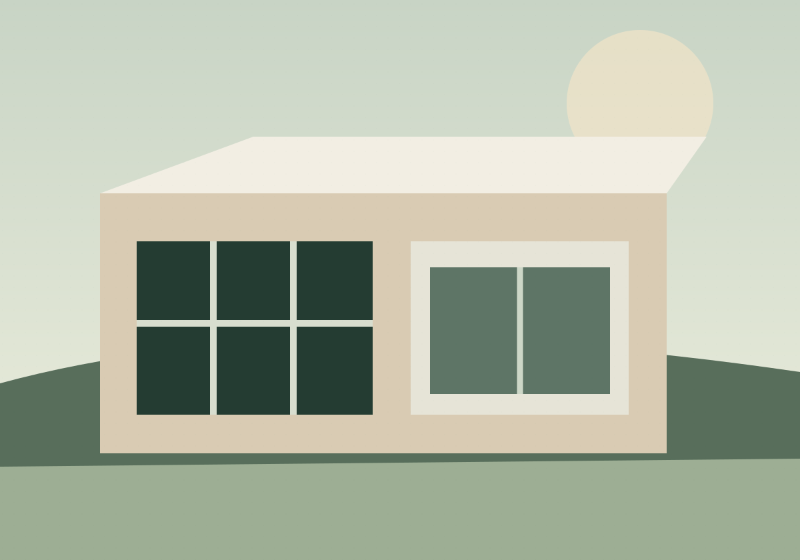
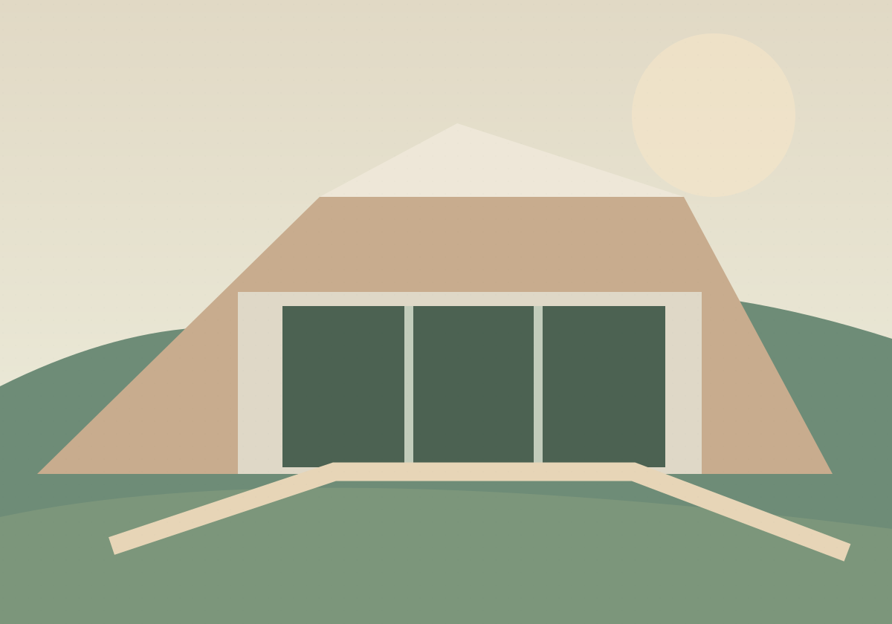
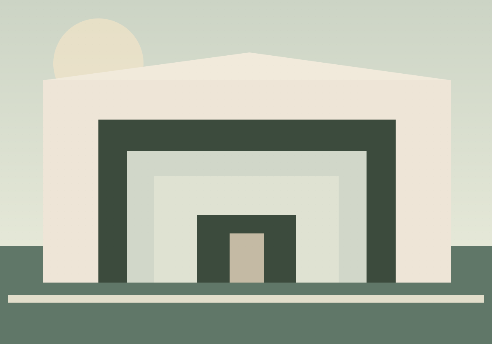

Our portfolio
Selected projects.
Explore four fictional concept studies. On the actual WordPress site, these are managed as a custom post type with native sector filters.
This is a static design preview; functional taxonomy filtering is available in the WordPress theme.

01North Ridge Residence
A considered dialogue between landscape, shelter and natural light.
 02
02The Civic Gallery
A shared cultural space designed for openness and discovery.

03Pinewood Retreat
A quiet retreat shaped by its relationship with nature.

04Courtyard House
An intimate reinterpretation of the traditional courtyard.